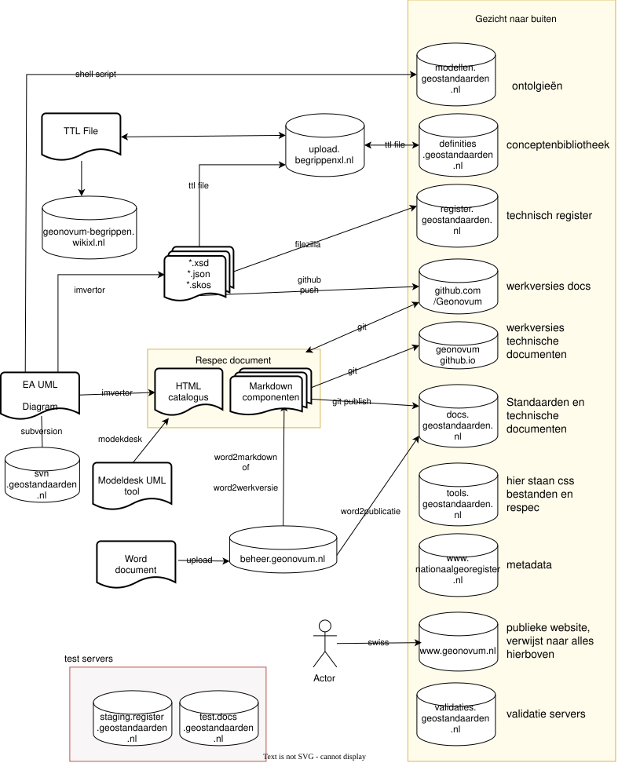

Publicatie Infrastructuur van Geonovum
Dit is de publicatie infrstructuur van Geonovum. Onder het architectuurplaatje staan:
- Een korte beschrijving.
- Verwijzing naar documentatie.
- Aandachtspunten verbeterpunten.
- Hoe we de boel beheren staat in wie beheert wat.
- Wat vertellen wij onze opdrachtgevers in de bijsluiter

Kort Overzicht
Zie het document werkwijze informatiemodelleren voor een iets langer overzicht.
[1] UML
- UML klasse diagrammen maken we met Enterprise Architect.
- Binnen UML gebruiken we MIM als metataal.
- Ook gebruiken we NEN 3610 als raamwerk.
[2] Subversion
- De UML diagram worden met subversion (svn) beheerd.
- Deze server draait op
svn.geostandaarden.nl
[3] Imvertor
- Imvertor vertaalt het UML naar catalog, xsd etc.
[4] ReSpec document
- Onze standaarden maken we in ReSpec.
- Dit is een tool die uit een aantal bestanden (Markdown, HTML) een mooi document publiceert.
- De bestanden beheren we in GitHub
[5] GitHub
- Onze standaarden beheren en versioneren we in GitHub.
[6] docs.geostandaarden.nl
- Onze standaarden publiceren we op docs.geostandaarden.nl
- Dit doen we door het ftp de bestanden daarnaartoe te kopieren.
[7] tools.geostandaarden.nl
- Op deze server staan css bestanden en hulpbestanden voor ReSpec
[7] beheertools
- Interne server die beheertaken automatiseert.
[9] register.geostandaarden.nl
- Technisch register met xsds, json-schema etc.
[13] Nationaal Georegister
- Staat los van de rest van de publicatie infrastructuur.
[14] Web server van Geonovum
- Staat los van rest van publicatie infrastructuur.
Documentatie
[1] UML
- Overzicht
- Primitieve datatypes: Handleiding en toelichting op het toepassen van standaarddatatypes in modelleeromgeving Geonovum.
- Toolbox importeren: Handleiding voor het importeren van de MIM-toolbox in EA.
[2] Subversion
- Subversion installeren voor EA: Installatie SVN en informatiemodel in versiebeheer zetten.
- Subversion importeren bestaand project: Packages importeren vanuit SVN in EA.
[3] Imvertor
- Imvertor: Verwijzingen naar verschillende onderwerpen met betrekking tot Imvertor.
[4] ReSpec
- Respec handleiding: Algemene handleiding.
- Respec code toepassen: Richtlijnen voor het toepassen van code in documentatie.
- Respec definitielijst maken: Handleiding voor het maken van een definitielijst in ReSpec-documentatie.
[5] GitHub
- GitHub werkwijze: algemene inleiding over GitHub.
- GitHub handleiding: Hoe maak je een account aan en hoe doe je beheertaken.
[6] docs.geostandaarden.nl
[9] register.geostandaarden.nl
Technische onderdelen van de standaard worden op: register.geostandaarden.nl gezet. Hoe je dit met een webhook kan doen staat beschreven in: technisch-register-2019
[10] Markdown
- Markdown handleiding: Handleiding werken met Markdown voor ReSpec-documentatie.
MIM
- Toolbox genereren: Handleiding voor het maken van een EA-toolbox.
- Toolbox genereren extensie: Handleiding voor het maken van een extensie op de MIM-toolbox.
GML
- GML: Toelichting GML, XSD en Namespaces.
Ontologie
- Ontologie: Handleiding voor het maken en publiceren van een ontologie.
Word2XXX
Ontologieën (modellen.geostandaarden.nl)
Er is één ontologie gepubliceerd: die van NEN 3610.
Dit is uitgelegd in de handleiding ontologie maken
beheer
Voor licenties of de interne beheerder van de tooling kun je terecht op intranet
Aandachtspunten
- Algemeen
- Het is niet één gezicht naar buiten maar meerdere. De samenhang kan beter.
- UML
- Er is een alternatieve tool voor UML. Wat gaan we daar mee doen? Modeldesk.
- Imvertor
- De beheerders van Imvertor willen binnenkort met pensioen.
- Imvertor is niet echt modulair
- modellen.geostandaarden.nl
- Hoe kan het dat hier maar 1 standaard op staat?
- docs.geostandaarden.nl
- De gegevens op deze server worden slecht beheerd. We hebben ideeën voor een mooie beheeromgeving maar die is er nog niet.
- Documenten op de site zouden self contained moeten zijn maar sommige verwijzen naar css bestanden op register.geostandaarden.nl waardoor gepubliceerde standaarden opeens onleesbaar kunnen worden.
- definities.geostandaarden.nl
- Er zijn hiervoor twee verschillende werkwijzes die een verschillend resultaat leveren. Goede beschrijving werkwijze is hier nodig.
- register.geostandaarden.nl
- De documenten die hierop staan zijn niet in beheer.
- beheertools
- Deze server moet zelf in beheer genomen worden.
- GitHub
- Deze server is publiek waardoor alles wat hierop staat publiek is.
- ReSpec
- Heel veel documenten zijn van minder dan gewenste kwaliteit omdat er geen goede kwaliteitscriteria en controle mechanismes zijn.
- Website Geonovum
- Beheer links met technische servers is vooral handmatig.
- Scheiding met technische servers kan leiden tot lagere ranking documenten bij zoeken.
- Microsoft teams
- Dit is vooral een intern systeem waardoor samenwerking met externe partijen soms lastig is.
- Alle teams zouden voor iedereeen binnen Geonovum zichbaar moeten zijn maar zijn dat niet.
- Onderscheid tussen dingen die per jaar gaan en dingen die per project gaan is niet goed geregeld.
- Heel veel spookmappen en document die bij niemand bekend zijn.
MkDocs voor deze handleiding
De handleiding wordt beheerd in MkDocs. Dit is een lichtgewicht tool die een doorzoekbare en navigeerbare site maakt van een verzameling Markdown documenten. De handleiding staat op github pages. De bronbestanden staan in: handleiding-tooling.
Je kunt mkdocs ook lokaal installeren. Dan kun je live je edits volgen in je browser: http://127.0.0.1:8000/ met het commando:
mkdocs serve